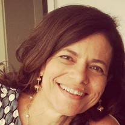
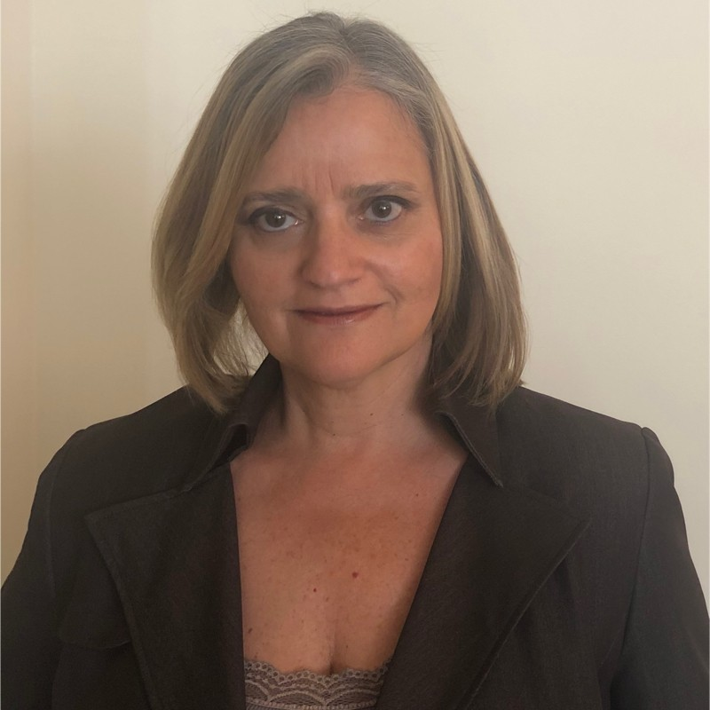

Collaborations
This page highlights the colleagues and collaborators with whom I have had the privilege of working throughout my career. These collaborations reflect both the diversity of research initiatives and the spirit of cooperation essential to achieving results.
Brazil

Profa. Marta MattosoCOPPE/UFRJ

Profa. Aline PaesIC/UFF

Prof. Marcos LageIC/UFF
Profa. Isabel RossetiIC/UFF

Prof. Yuri FrotaIC/UFF
Prof. Marcos BedoIC/UFF

Profa. Vania NevesIC/UFF

Prof. Alvaro CoutinhoCOPPE/UFRJ

Profa. Fernanda BaiãoPUC-Rio

Prof. Bruno Francesco Rodrigues de OliveiraBiomedicine, UFF

D.Sc. Débora Barbosa PinaPostdoc, UFRJ

Prof. Luiz Gustavo DiasIFGoiano

D.Sc. Liliane KunstmannPostdoc, IMPA

Profa. Flavia BernardiniIC/UFF

Profa. Agma TrainaICMC/USP

PhD Julia GschwendLIneA


Profa. Cristina BoeresIC/UFF

Prof. Bruno LopesIC/UFF
Profa. Lucia DrummondIC/UFF



Prof. Sergio LifschitzPUC-Rio


Profa. Rafaelli CoutinhoCEFET/RJ

Prof. Eduardo OgasawaraCEFET/RJ
International

Prof. Patrick ValduriezINRIA, France
Profa. Adriane ChapmanSouthampton, UK

Prof. Fabio MirandaUIC, USA

PhD Rafael Ferreira da SilvaORNL, USA
D.Sc. Vítor SousaApple Inc., USA
Prof. Paolo MissierUniversity of Birmingham, UK

Dr. Gaëtan HeidsieckUniversity of Göttingen, Germany

Profa. Esther PacittiINRIA/Université de Montpellier, France

Dr. Renan SouzaORNL, USA

Dr. Ji LiuHithink RoyalFlush, China
Profa. Carolina VeigaJames Madison University, USA
Prof. Nils Murrugarra LlerenaUniversity of Pittsburgh, USA